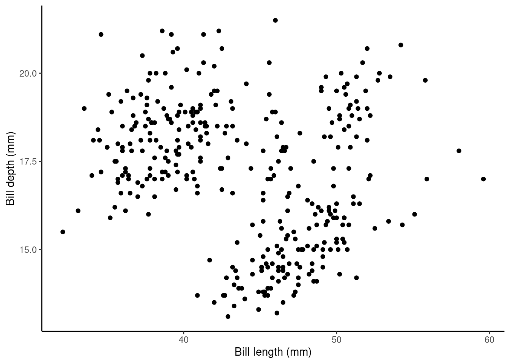
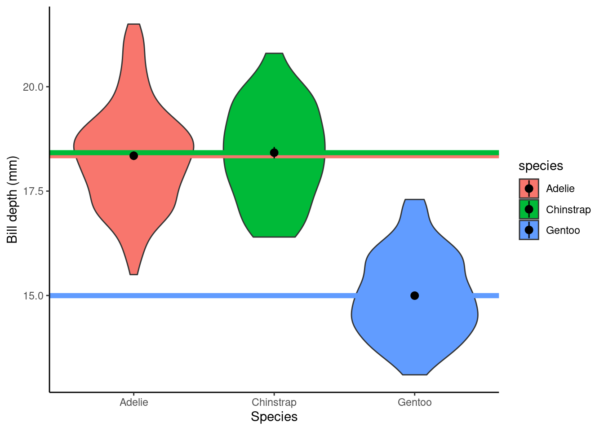
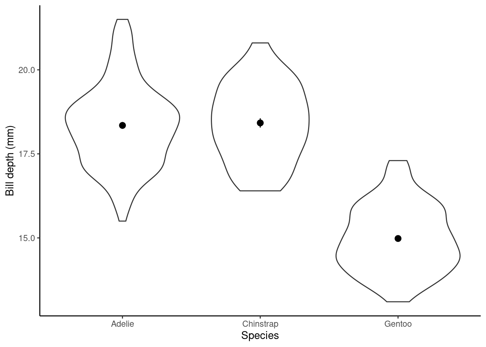

Parametric hypothesis tests
Recall, the P\(\overline{\text{a}}\)ua dataset. It contains the following variables
Ageof P\(\overline{\text{a}}\)ua in years (calculated from counting rings in the cone)Lengthof P\(\overline{\text{a}}\)ua shell in centimetersSpeciesof P\(\overline{\text{a}}\)ua: Haliotis iris (typically found in NZ) and Haliotis australis (less commonly found in NZ)
library(tidyverse)
paua <- read_csv("https://raw.githubusercontent.com/STATS-UOA/databunker/master/data/paua.csv")glimpse(paua)## Rows: 60
## Columns: 3
## $ Species <chr> "Haliotis iris", "Haliotis australis", "Haliotis australis", "…
## $ Length <dbl> 1.80, 5.40, 4.80, 5.75, 5.65, 2.80, 5.90, 3.75, 7.20, 4.25, 6.…
## $ Age <dbl> 1.497884, 11.877010, 5.416991, 4.497799, 5.500789, 2.500972, 6…One-Sample t-test
Using a violin plot we can look at the distribution of shell Length. We can calculate the average Length of all shells in our sample
paua %>% summarise(average_length = mean(Length))## # A tibble: 1 × 1
## average_length
## <dbl>
## 1 5.19What about drawing inference? Do we believe that the average length of P\(\overline{\text{a}}\)ua shells is, say, 5cm? We know our sample average, but can we make any claims based on this one number?
How do we reflect our uncertainty about the population mean? Remember, it's the population we want to make inference on based on our sample!
Enter the Standard Error of the Mean (SEM), \[\text{SEM} = \frac{\sigma}{\sqrt{n}}, \] where \(\sigma = \sqrt{\frac{\Sigma_{i = 1}^n(x_i - \bar{x})^2}{n-1}}\) (\(i = 1,...,n\)) is the standard deviation (SD) of the sample, \(n\) is the sample size, and \(\bar{x}\) is the sample mean.
Calculating \(\Sigma_{i = 1}^n(x_i - \bar{x})^2, i = 1,...,n\) by hand.
In, relatively, plain English this sum is the sum squared differences of the distances between the \(i^{th}\) observation and the sample mean \(\bar{x}\) (denoted \(\mu_x\) in the GIF below)

So using the example values in the GIF
## our sample of values
x <- c(1,2,3,5,6,9)
## sample mean
sample_mean <- mean(x)
sample_mean## [1] 4.333333## distance from mean for each value
distance_from_mean <- x - sample_mean
distance_from_mean## [1] -3.3333333 -2.3333333 -1.3333333 0.6666667 1.6666667 4.6666667## squared distance from mean for each value
squared_distance_from_mean <- distance_from_mean^2
squared_distance_from_mean## [1] 11.1111111 5.4444444 1.7777778 0.4444444 2.7777778 21.7777778## sum of the squared distances
sum(squared_distance_from_mean)## [1] 43.33333Calculating SD and SEM
Now what about the SD? Remember it's the \(\sqrt{\frac{\Sigma_{i = 1}^n(x_i - \bar{x})^2}{n-1}}\) so = \(\sqrt{\frac{43.3333333}{n-1}}\) = \(\sqrt{\frac{43.3333333}{6-1}}\) = \(\sqrt{\frac{43.3333333}{5}}\) = 2.9439203.
Or we could just use R's sd() function
sd(x)## [1] 2.94392So the SEM is \(\frac{\text{SD}}{\sqrt{n}}\) = \(\frac{2.9439203}{\sqrt{6}}\)
In R
sd(x)/sqrt(length(x))## [1] 1.20185For the paua data we can simply use the in-built functions in R to calculate the SEM
sem <- paua %>% summarise(mean = mean(Length),
sem = sd(Length)/sqrt(length(Length)))
sem## # A tibble: 1 × 2
## mean sem
## <dbl> <dbl>
## 1 5.19 0.155Visualising the uncertainty
Recall that the SEM is a measure of uncertainty about the mean. So we can use it to express our uncertainty visually. Typically \(\pm\) twice the SEM is the interval used:

Why error bars that are \(\pm\) twice the SEM?
This is approximately the 95% confidence interval for the population mean (see lecture)
The exact 95% CI is given by \(\bar{x}\) (mean) \(\pm\) \(t_{df,1 - \alpha/2}\) \(\times\) SEM
- df = degrees of freedom (in this situation df = n - 1)
- \(\alpha\) = level of significance
Each mean has its own confidence interval whose width depends on the SEM for that mean
When the df (more on these later) are large (e.g. 30 or greater) and \(\alpha\) = 0.05 \(t_{df,1 - \alpha/2}\) = \(t_{large,0.975}\) \(\approx\) 2. Hence, the 95% confidence interval for the population mean is approximately \(\bar{x}\) (mean) \(\pm\) 2 \(\times\) SEM
Back to our hypothesis test
Question: Do we believe that the average length of P\(\overline{\text{a}}\)ua shells is 5cm?
Formalizing into a hypothesis test:
- Null hypothesis: On average P\(\overline{\text{a}}\)ua shells are 5cm long
- Alternative hypothesis: On average P\(\overline{\text{a}}\)ua shells are not 5cm long
- Notationally: \(H_0: \mu = 5\) vs \(H_1: \mu \neq 5\) (\(\mu\) is the proposed mean)
Calculating a statistic (we use a t-statistic)
t-statistic \(= \frac{\bar{x}- \mu}{\text{SEM}}\) = \(\frac{5.1925 - 5}{0.155351}\) = 1.239
\(\bar{x}\) is the sample mean
\(\mu\) is the theoretical value (proposed mean)
The corresponding p-value
Recall that a p-value is the probability under a specified statistical model that a statistical summary of the data would be equal to or more extreme than its observed value
So in this case it's the probability, under the null hypothesis (\(\mu = 5\)), that we would observe a statistic as least as extreme as we did.
Under our null hypothesis the distribution of the t-statistic is as below. The one calculated from our hypothesis test was 1.2391. Now, remember that our alternative hypotheses was \(H_1: \mu \neq 5\) so we have to consider both sides of the inequality; hence, anything as least as extreme is either \(> 1.2391\) or \(< -1.2391\) to our observed statistic (vertical lines). Anything as least as extreme is therefore given by the grey shaded areas.
We can calculate the p-value using the pt() function (where q is our calculated t-statistic, and df are the degrees of freedom from above):
2*(1 - pt(q = 1.2391,df = 59))## [1] 0.2202152Or we could do all of the above in one step using R
t.test(paua$Length, mu = 5 )##
## One Sample t-test
##
## data: paua$Length
## t = 1.2391, df = 59, p-value = 0.2202
## alternative hypothesis: true mean is not equal to 5
## 95 percent confidence interval:
## 4.881643 5.503357
## sample estimates:
## mean of x
## 5.1925Recall, that the p-value gives the probability that under our null hypothesis we observe anything as least as extreme as what we did (hence the \(\times 2\), think of the grey shaded area in the graph). This probability is \(\sim\) 22%. Do you think what we've observed is likely under the null hypothesis?
Does this plot help? The proposed mean is shown by the blue horizontal line; the dashed line shows the sample mean and the dotted lines \(\pm\) the SEM.

Differences between two means

Calculating the differences between species means:
Haliotis australis average - Haliotis iris average = \(\mu_{\text{Haliotis australis}} - \mu_{\text{Haliotis iris}}\) = 5.767 - 4.81 = 0.957. Doesn't really tell us much...
As above the average values are all well and good, but what about variation? Recall the SEM from the one-sample t-test? The same idea holds here, although the calculation is a little bit more complicated (as we have to think about the number of observations in each group). But from the two group SEMs we can calculate the Standard Error of the Difference between two means, SED.
Independent samples t-test using t.test()
Question: Do we believe that on average the length of P\(\overline{\text{a}}\)ua shells are equal between species?
Formalizing into a hypothesis test:
- Null hypothesis: On average the species' shells are the same length
- Alternative hypothesis: they aren't!
- Notationally: \(H_0: \mu_{\text{Haliotis iris}} - \mu_{\text{Haliotis australis}} = 0\) vs \(H_1: \mu_{\text{Haliotis iris}} \neq \mu_{\text{Haliotis australis}},\) where \(\mu_{j}\) is the average length for species, \(j =\) (Haliotis iris, Haliotis australis).
Let us now calculate the test statistic: t-statistic = \(\frac{\bar{x}_{\text{difference}} - \mu}{\text{SED}}\) = \(\frac{\bar{x}_{\text{difference}} - 0}{\text{SED}}n\) where \(\bar{x}_{\text{difference}}\) is the differences between the species` averages.
Calculations area a little bit more tricky here so let's use R:
test <- t.test(Length ~ Species, data = paua)
## printing out the result
test##
## Welch Two Sample t-test
##
## data: Length by Species
## t = 3.5404, df = 57.955, p-value = 0.0007957
## alternative hypothesis: true difference in means between group Haliotis australis and group Haliotis iris is not equal to 0
## 95 percent confidence interval:
## 0.4158802 1.4980086
## sample estimates:
## mean in group Haliotis australis mean in group Haliotis iris
## 5.766667 4.809722test$p.value## [1] 0.0007956853Listed are the t-statistic, t = 3.5403636 and the p-value, p-value = 7.9610^{-4} for the hypothesis test outlined above. What would you conclude?
One-Way Analysis of Variance (ANOVA)
What if we had more than two groups?
In this section we consider the following data of the calculated logAUC for 12 rats subjected to three different treatments (Surgery), C, P, and S:
| Surgery | Rat | logAUC |
|---|---|---|
| C | 1 | 8.49 |
| C | 2 | 8.20 |
| C | 3 | 9.08 |
| C | 4 | 8.07 |
| P | 1 | 10.24 |
| P | 2 | 7.72 |
| P | 3 | 9.34 |
| P | 4 | 8.50 |
| S | 1 | 11.31 |
| S | 2 | 12.69 |
| S | 3 | 11.37 |
| S | 4 | 10.82 |
To read the data directly into R you can use
readr::read_csv("https://raw.githubusercontent.com/STATS-UOA/databunker/master/data/crd_rats_data.csv")Between group SS (SSB)
The idea: Assess distances between treatment (surgical condition) means relative to our uncertainty about the actual (true) treatment means.

Add up the differences: -1.192 + -0.703 + 1.895 = 0. This is always the case!
So adding up the differences: -1.192 + -0.703 + 1.895 = 0. Not a great way to measure distances!
Sums of Squares?
-1.192^2 + -0.703^2 + 1.895^2
add up the squared differences? but... there are 4 observations in each group (treatment)
4\(\times\)(-1.192)^2 + 4\(\times\)(-0.703)^2 + 4\(\times\)(1.895)^2
This is the Between Groups Sums of Squares or the Between group SS (SSB)
So the Between group SS (SSB) = 22.02635
Adding up the differences: -1.192 + -0.703 + 1.895 = 0. This is always the case and that itself gives us information...
We only need to know two of the values to work out the third!
So we have only 2 bits of unique information; SSB degrees of freedom = 2
Within group SS (SSW)
The Within group SS (SSW) arises from the same idea:
To assess distances between treatment (surgical condition) means relative to our uncertainty about the actual (true) treatment means.
Procedure:
- Observation - Treatment mean
- Square the difference
- Add them up!
Within group SS (SSW) unexplained variance

F-statistic
Recall the Between group SS (SSB) = 22.02635
So mean SSB = 22.02635 / 2
The within group SS (SSW) = 6.059075
Here we have 3\(\times\) 3 bits of unique information: within groups degrees of freedom is 9.
So mean SSW = 6.059/9
Consider the ratio \({\frac{{\text{variation due to treatments}}}{{\text{unexplained variance}}}} = {\frac{{\text{ mean between-group variability}}}{{\text{mean within-group variability}}}}\) \(=\frac{\text{mean SSB}}{\text{mean SSW}}\) \(=\frac{\text{MSB}}{\text{MSW}}\) = \(=\frac{\text{experimental variance}}{\text{error variance}}\) 16.3586975
This is the F-statistic!
Degrees of freedom (DF)
Essentially statistical currency (i.e., unique bits of information). So in the example above we have 3 treatment groups and if we know the mean of two we know the third (i.e., 2 unique bits of info) so SSB df = 2.
Now, for SSW df We have 12 observations (4 in each group); we know the treatment means so if we have three of those observed values in each group we know the fourth: 12 - 3 = 9 (i.e., number of observations - number of df lost due to knowing the cell means).
Inference
Hypothesis: We test the Null hypothesis, \(H_0\), population (Surgery) means are the same on average verses the alternative hypothesis, \(H_1\), that at least one differs from the others!
Under our null hypothesis the distribution of the F-statistic is as below. The value calculated from our hypothesis test was 16.359. This observed test statistic is shown by the vertical line. To calculate the relevant p-value we can use
(1 - pf(q = 16.351,df1 = 2, df2 = 9))## [1] 0.001007825Thus, the probability of getting an F-statistic at least as extreme as the one we observe (think of the area under the tails of the curve below) p-value Pr(>F)= 0.001 tells us we have sufficient evidence to reject \(H_0\) at the 1% level of significance.

Alternatively, we could do this in one step using aov():
summary(aov(logAUC ~ Surgery, data = rats))## Df Sum Sq Mean Sq F value Pr(>F)
## Surgery 2 22.026 11.013 16.36 0.00101 **
## Residuals 9 6.059 0.673
## ---
## Signif. codes: 0 '***' 0.001 '**' 0.01 '*' 0.05 '.' 0.1 ' ' 1